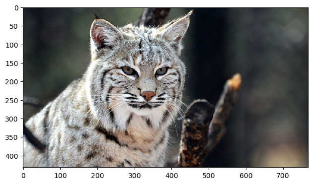

Gradient magnitude computation measures the intensity of change in pixel values. I first took the partial derivative in x (horizontal direction) and y (vertical direction) of an image by convolving the image with difference operators D_x and D_y. Then, the gradient magnitude was calculated by combining these two measures: square-rooting the sum of the x and y gradient components squared. [np.sqrt(grad_x**2 + grad_y**2)]


dx, dy, gradient magnitude, binarized
Below are the results from convolving the image with a gaussian and repeating the procedures in part 1.1: I saw that the binarized image had thicker lines than the one in part 1.1.


(dx, dy, gradient magnitude, binarized)
Below are the results from convolving the gaussian with D_x and D_y first: I got the same results as using the previous method.


(dx_gaussian, dy_gaussian, dx, dy, gradient magnitude, binarized)

(before, after)
(before, after)
A sharp image of a bird, blurred it, and tried to sharpen it again:


(original, blurred, sharpened)

(Derek and Nutmeg)
Below is an example of change over time:


(before, after, hybrid image)
Below is an example of morph between different objects:


(Log magnitude of the Fourier transform of image 1, image 2, low-pass filtered image 1, high-pass filtered image 2, hybrid image)


(eagle, dog, hybrid image)